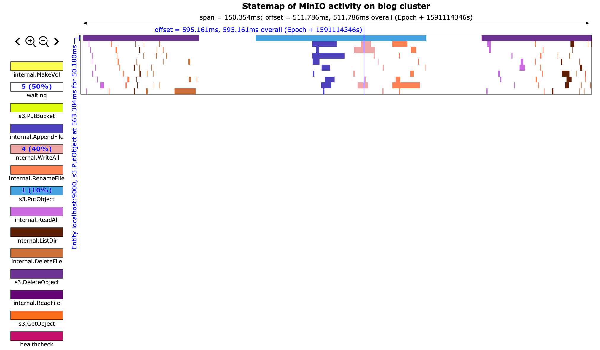

Welcome
2017-10-11
Welcome to my blog. My name is Kody Kantor, and I'm a software engineer in Minnesota.
You'll find random writing in this blog. Some of it is immature writing but it continues to survive for your enjoyment and my embarrassment.
Thanks for visiting.
Kody Kantor
Enjoying technical debt
2022-05-08
Introduction
I've found a method to help me enjoy working on technical debt. This method helps me to be more productive and motivates me to do my other work. I'll share it with you here.
Where does technical debt come from?
Technical debt can come in many forms. You will commonly hear that technical debt comes as a result of taking shortcuts when building software. This is certainly one place where technical debt comes from.
Shortcuts
In a perfect world we will never take shortcuts when designing software. Unfortunately time is a valuable resource! Sometimes shortcuts when building software can be necessary to quickly demonstrate concepts. After the concept is demonstrated to stakeholders we need to make a decision: continue using the concept code (ignore the tech debt), or replace the concept code with a long-term solution (pay down the debt).
The software industry has no shortage of euphemisms for shortcuts: proof of concept and 'demo code' are common. We even have a name for engineers who do this type of work often: rockstars!
Sometimes shortcuts are necessary. The organization you find yourself in may dictate how often you take shortcuts. For example, an organization where there is a strong vision and agreement between parties may not require many shortcuts - the emphasis is on delivering a good solution to customers. In an organization that doesn't value being thorough or one that isn't as focused on a shared vision you may find yourself taking more shortcuts to convince others of your idea.
Technical debt can be used as leverage. We only have a finite amount of time to build software. Choosing to take on technical debt by taking a shortcut means we are essentially borrowing time from the future to achieve our goals sooner. This can be incredibly valuable! After all, there is an infinite amount of time in the future that we can use as leverage, and the time before the next demo is certainly finite!
Low priority tasks
Some work just isn't a priority, so it ends up languishing in the backlog. Every software project I have seen has an infinitely growing backlog. Software can always be improved! This is another popular place for tech debt to grow.
This form of tech debt is what we will discuss in this blog post. I see the growing backlog as a pile of pleasure, not a mountain of pain!
Addressing technical debt
Participants in a software project tend to see technical debt as a weeping sore. It's something that bothers us and makes it harder to make progress. Many of us have participated in discussions with product owner explaining that progress is slowing down because of tech debt.
Common methods
I've experience a number of ways that organizations attempt to pay down tech debt:
- Tech debt sprints. All feature work is paused for two weeks while tech debt is addressed.
- Tech debt hackathons. Feature work is paused for a day while tech debt is addressed. This might happen between sprints, on a quarterly basis, or on some other interval.
- Allocating time to address high priority tech debt. During sprint planning some tasks are taken by the team to pay down tech debt.
- Rewriting the software. In one organization all of the software was rewritten every few years. Can't have tech debt if the software ceases to exist!
My recent attempts
Recently I have been trying something else: dedicating up to an hour per day to unprioritized work of my choosing. This provides many benefits to me and the team.
Autonomy
I choose which tasks I take on. Nobody asked me to do this work, so I feel that it is a great opportunity to choose how and when I perform these tasks.
Mastery
I use this time to learn new things. Rather than taking on work that is familiar to me I will take on a task that will allow me to learn a new tool or learn a new area of the system.
Purpose
Taking on this work not only makes me feel good due to the previous two points, but it helps me to make others on my team more productive. This pays dividends! The best way to succeed is to make sure your project succeeds, and one way to do this is to enable your coworkers to do good work.
Increased productivity
When I am working on a difficult problem I often find it benefitial to stop and focus on something else for a short time. This allows my subconcious to continue chewing on the problem while I do something else. Paying tech debt is a productive break from critical work.
The playbook
Choose the work
I prefer to choose small tasks. Preferably the task can be completed in a few hours of work. Taking an hour per day to work on this means that I have submitted one 'bonus' change each week. This is a great motivator that makes me feel even more productive.
If the work you want to take is large, see if you can break it up into small pieces that each deliver value. For example, if you've always wanted to make a version of your service that relies on no external dependencies (maybe useful to make testing easeir), see if you can start by adding a trait/interface for interacting with one external dependency. If you lose motivation for your long term goal at least you have made testing one module easier.
Make the time
I start some mornings by dedicating an hour to this type of work. Starting my morning with learning something new of my choosing helps me to look forward to work each day. Dedicating mornings to this work makes it easier to allocate the time. Let's think about the opposite case: you crunch through critical work for most of the day and then try to jump to non-critical work. This is not a good model for me. I find that my brain is still intensely focused on the high priority work and I cannot concentrate on learning the necessary concepts to accomplish the low priority task.
Strictly time box
It is important to strictly time box this work, both in the micro (up to one hour each day) and in the macro (if your one-hour increments add up to 40 hours you should consider if the task can be made smaller). This is unprioritized work, after all. We should always be focused on helping our team succeed. Often this means spending your time working on high priority tasks.
Conclusion
I've had great success following this model recently. I may go a month without doing this work, or I may dedicate an hour each day for a month to unprioritized work! I am happiest when I make the time to do what I outlined here.
If you have thoughts on this or would like to share your approach please send me email at kody@kkantor.com.
Statemap Library for Rust Programs
2021-04-14
I suppose this blog is turning into a place where I can talk about my obsession with writing simulators. My hope is that if I dump my thoughts here where nobody will read them then I will save my coworkers from having to listen to boring stories about the origins of various bugs.
Bryan Cantrill wrote a tool in the latter part of his career at Joyent called Statemap. I've written about statemaps in the past, specifically in 2019 when we were looking at PostgreSQL temp file IO, and in 2020 when we used Statemaps to debug pathological performance in MinIO. In fact, in the 2020 post about MinIO I alluded to writing about rust-statemap and the manta-chum integration in the future.
To level-set again, we need to talk about how confusing the term 'statemap' is. 'Statemap' can refer to any of these three things:
- An SVG file (a statemap rendering)
- Lines of JSON data in specific formats (sometimes referred to as 'instrumentation output')
- A program that turns JSON into an SVG (the statemap tool)
When we set out to build rust-statemap we wanted to do two things:
- Define the statemap line protocol
- Provide a library for Rust programs to use the statemap line protocol
The Joyent statemap tool includes a private API and definitions of the statemap line protocol. When the statemap tool was written I believe it was mostly intended for use with DTrace, though the door was open for other forms of instrumentation. Since we were writing a lot of Rust code (which is hard to instrument with DTrace, though I did create a PoC tool to add DTrace probes to Rust programs), we needed a way to generate statemap instrumentation output in a relatively idiomatic way.
Anyway, long story short I did a bunch of work to define a public statemap API with Rust bindings to make it easy for Rust programmers to generate statemap instrumentation output and called it rust-statemap.
manta-chum statemaps
The first time we used rust-statemap was for our 'minio statemap' tool, which I already described in 2020. The second use was in [manta-chum](https://github.com/joyent/manta-chum. manta-chum is a load-generating tool the supports a bunch of common file protocols: s3, webdav, and posix. It seeks to bridge the gap between micro-benchmarks like fio and mega-benchmarks like COSbench.
manta-chum runs with a bunch of 'normal' synchronous threads (no green-threading stuff, except where it couldn't be avoided), and we wanted to see what each thread was doing during a benchmark. We wired up rust-statemap and gained a few cool things:
- We knew the operations performed by each thread
- The duration of each operation is recorded
- We can consul, and slice/dice the above two data points at any time and in any way
Take this example run of manta-chum on my laptop, below. In this test we ran manta-chum with its default settings: 1 thread, mix of read/write operations, writing to the local filesystem with fsync enabled after each write. Feel free to use the + and - magnifiers and click on the graph to interact with the statemap. I suggest zooming in to discover what happens between the blue 'fsync' operations. Each line on the y axis (there is only one) represents a thread, and the x axis represents time beginning when the manta-chum process spawns and ending when the manta-chum process finished writing the statemap data file.
The 'light' theme is best for viewing these statemaps.
If you zoom in and pan around you can see that this single thread is spending all of its time issuing fsync syscalls, 24ms at a time. Then between fsync operations the thread is issuing read, write, open, and mkdir calls, all of which finish quickly.
This is interesting, but what happens if we have a bunch of threads doing IO at the same time? Here's another statemap rendering from manta-chum, this time with 10 threads running at the same time:
There is a lot more happening in that statemap. Notably, everything is much slower. open, fsync, and mkdir calls can all take over 100ms each. The read syscalls are still nearly instant.
Now, what happens if we remove that pesky fsync call? Let's run the same test, but with fsync disabled.
Bonkers! This time the ten threads wrote 5GB in 2 seconds, but the previous two runs wrote ~200MB in 16 seconds. Of course the 5GB written during this test is just buffered in memory. This statemap rendering shows a lot of interesting things that raise a lot of questions:
- Why is there an occasional ~6ms pause across all chum threads?
- Why do read operations suddenly take much longer after 1.2 seconds of benchmark runtime?
- Approximately every second all of the mkdir and open calls take a long time across all threads. What gives?
A new hope (for the future)
In the end we have been happy to have the rust-statemap library for learning more about how our rust applications work. Along the way we found a bunch of rough edges with the statemap protocol. Rather than repeating them all here, check out the list of 'Statemap protocol moans and niggles' in the rust-statemap repository's README.
Unfortunately manta-chum helped us to realize that we couldn't bring our storage product up to a level of performance that would compete with newer storage systems. manta-chum was the last piece of Rust code I anticipate working on for quite a while. If I end up writing more rust in the future I would love to address these statemap protocol issues so it's even easier to create statemaps.
Cluster Simulator
2021-04-08
A tree in the forest
I've always enjoyed writing simulators to describe our production environment. In late 2020 we had a question that merited a simulator: how much network and disk IO do we need to buy for our storage system?
When we first asked this question we were armed with a manual calculation that someone from Samsung had put together. It was a tree diagram that described a typical network and rack architecture with nodes indicating some type of hardware, and edges indicating network connections between nodes. At the top of the diagram is a description of the workload and environment.
For example, one environment might consist of a single 12 node storage cluster with four parity blocks and eight data blocks per erasure coding stripe and be deployed across three datacenters without 'bin packing' racks. The description would also note how much throughput would be happening in the cluster at any given time, expressed in gigabits per second.
The diagram itself noted how much data would happen on each node in the cluster with the given workload and configuration. For example, maybe the workload was 100gbps of write-only traffic. In this case, the Internet-facing switch would serve 100gbps of network traffic, and split that 100gbps evenly between three more switches, each in a different datacenter. With simple math we can determine that each of those three second-level switches served (at least) ~33gbps of throughput. Then we can further divide the throughput to the ToRs and machines in each region. A simplified example is shown below.

After this point the calculations get much more complicated. Due to EC write inflation across three datacenters the 33gbps number isn't accurate. It ended up being that each switch would see ~125gbps of combined rx/tx throughput.
Although the calculations are relatively simple for a single cluster and a handful of racks, the problem of estimating network and disk IO requirements quickly becomes unwieldy for a single mind to compute or for a tree diagram to display. Good thing we have computers!
Admitted Google Drive lover
I have what could probably be described as an irational love of creating diagrams and calculators in Google Drive. I started the ZFS capacity usage simulator in a Google Sheet, and the cluster throughput simulator also started as a Google Sheet. All of the architecture diagrams I draw are done in Google Slides... It's just so easy to get started things in Google Drive and is easy to share with technical and non-technical folks alike.
After a day of fighting with Google Sheets calculations and the inability to easily write comments for myself I decided to migrate the cluster throughput simulator to Python. Making the jump from trying to beat Google Sheets into submission to Python was amazing. Being able to represent racks, switches, machines, datacenters, and regions as Python objects was incredibly powerful, and we were able to quickly put together a program that reproduced the trivial throughput diagrams that were provided to us.
Now that we had the primitives in place to simulate arbitrary topologies, only a bit more tweaking allows us to churn out network simulations for an arbitrary number of clusters, racks, datacenters, machines, erasure coding parameters, and even whether or not our simulated deployment system used a bin-pack or spread algorithm. Once we had the primitives in place I was curious what disk IO looked like, so by adding just a few lines of code we knew how much disk throughput would be required for a given user workload.
Region
DC0: tx=44.4 rx=77.8
RACK0: tx=44.4 rx=77.8
MACHINE0: cluster=0 tx=14.8 rx=25.9 disk_write=16.7 disk_read=0.0
MACHINE1: cluster=0 tx=14.8 rx=25.9 disk_write=16.7 disk_read=0.0
MACHINE2: cluster=0 tx=14.8 rx=25.9 disk_write=16.7 disk_read=0.0
DC1: tx=44.4 rx=77.8
RACK1: tx=44.4 rx=77.8
MACHINE3: cluster=0 tx=14.8 rx=25.9 disk_write=16.7 disk_read=0.0
MACHINE4: cluster=0 tx=14.8 rx=25.9 disk_write=16.7 disk_read=0.0
MACHINE5: cluster=0 tx=14.8 rx=25.9 disk_write=16.7 disk_read=0.0
DC2: tx=44.4 rx=77.8
RACK2: tx=44.4 rx=77.8
MACHINE6: cluster=0 tx=14.8 rx=25.9 disk_write=16.7 disk_read=0.0
MACHINE7: cluster=0 tx=14.8 rx=25.9 disk_write=16.7 disk_read=0.0
MACHINE8: cluster=0 tx=14.8 rx=25.9 disk_write=16.7 disk_read=0.0
This is a fun tool to play with. Maybe I'm curious how four 12-node clusters with quadruple parity, and 'spread' service allocation handle 600gbps upload / 300 gbps download throughput. Thanks to this tool I know my answer less than 10 seconds after I asked it down to the individual machine.
Region
DC0: tx=468.8 rx=564.8
RACK0: tx=115.6 rx=141.4
MACHINE0: cluster=0 tx=28.9 rx=35.2 disk_write=18.8 disk_read=6.2
MACHINE1: cluster=1 tx=28.1 rx=35.2 disk_write=18.8 disk_read=5.5
MACHINE2: cluster=2 tx=29.7 rx=35.2 disk_write=18.8 disk_read=7.0
MACHINE3: cluster=3 tx=28.9 rx=35.9 disk_write=18.8 disk_read=5.5
RACK1: tx=114.1 rx=140.6
MACHINE4: cluster=0 tx=28.1 rx=35.2 disk_write=18.8 disk_read=5.5
MACHINE5: cluster=1 tx=28.1 rx=35.2 disk_write=18.8 disk_read=5.5
MACHINE6: cluster=2 tx=29.7 rx=35.2 disk_write=18.8 disk_read=7.0
MACHINE7: cluster=3 tx=28.1 rx=35.2 disk_write=18.8 disk_read=5.5
RACK2: tx=118.8 rx=141.4
MACHINE8: cluster=0 tx=28.9 rx=35.2 disk_write=18.8 disk_read=6.2
MACHINE9: cluster=1 tx=30.5 rx=35.2 disk_write=18.8 disk_read=7.8
MACHINE10: cluster=2 tx=28.9 rx=35.9 disk_write=18.8 disk_read=5.5
MACHINE11: cluster=3 tx=30.5 rx=35.2 disk_write=18.8 disk_read=7.8
RACK3: tx=120.3 rx=141.4
MACHINE12: cluster=0 tx=28.9 rx=35.2 disk_write=18.8 disk_read=6.2
MACHINE13: cluster=1 tx=31.2 rx=35.9 disk_write=18.8 disk_read=7.8
MACHINE14: cluster=2 tx=31.2 rx=35.2 disk_write=18.8 disk_read=8.6
MACHINE15: cluster=3 tx=28.9 rx=35.2 disk_write=18.8 disk_read=6.2
DC1: tx=460.2 rx=566.4
RACK4: tx=113.3 rx=141.4
MACHINE16: cluster=0 tx=29.7 rx=35.2 disk_write=18.8 disk_read=7.0
MACHINE17: cluster=1 tx=28.1 rx=35.2 disk_write=18.8 disk_read=5.5
MACHINE18: cluster=2 tx=28.1 rx=35.9 disk_write=18.8 disk_read=4.7
MACHINE19: cluster=3 tx=27.3 rx=35.2 disk_write=18.8 disk_read=4.7
RACK5: tx=117.2 rx=141.4
MACHINE20: cluster=0 tx=28.1 rx=35.2 disk_write=18.8 disk_read=5.5
MACHINE21: cluster=1 tx=29.7 rx=35.2 disk_write=18.8 disk_read=7.0
MACHINE22: cluster=2 tx=28.9 rx=35.9 disk_write=18.8 disk_read=5.5
MACHINE23: cluster=3 tx=30.5 rx=35.2 disk_write=18.8 disk_read=7.8
RACK6: tx=114.1 rx=141.4
MACHINE24: cluster=0 tx=28.1 rx=35.2 disk_write=18.8 disk_read=5.5
MACHINE25: cluster=1 tx=28.1 rx=35.9 disk_write=18.8 disk_read=4.7
MACHINE26: cluster=2 tx=27.3 rx=35.2 disk_write=18.8 disk_read=4.7
MACHINE27: cluster=3 tx=30.5 rx=35.2 disk_write=18.8 disk_read=7.8
RACK7: tx=115.6 rx=142.2
MACHINE28: cluster=0 tx=28.9 rx=35.9 disk_write=18.8 disk_read=5.5
MACHINE29: cluster=1 tx=26.6 rx=35.2 disk_write=18.8 disk_read=3.9
MACHINE30: cluster=2 tx=29.7 rx=35.2 disk_write=18.8 disk_read=7.0
MACHINE31: cluster=3 tx=30.5 rx=35.9 disk_write=18.8 disk_read=7.0
DC2: tx=468.0 rx=565.6
RACK8: tx=117.2 rx=141.4
MACHINE32: cluster=0 tx=28.1 rx=35.2 disk_write=18.8 disk_read=5.5
MACHINE33: cluster=1 tx=29.7 rx=35.9 disk_write=18.8 disk_read=6.2
MACHINE34: cluster=2 tx=28.1 rx=35.2 disk_write=18.8 disk_read=5.5
MACHINE35: cluster=3 tx=31.2 rx=35.2 disk_write=18.8 disk_read=8.6
RACK9: tx=117.2 rx=141.4
MACHINE36: cluster=0 tx=30.5 rx=35.2 disk_write=18.8 disk_read=7.8
MACHINE37: cluster=1 tx=29.7 rx=35.2 disk_write=18.8 disk_read=7.0
MACHINE38: cluster=2 tx=29.7 rx=35.2 disk_write=18.8 disk_read=7.0
MACHINE39: cluster=3 tx=27.3 rx=35.9 disk_write=18.8 disk_read=3.9
RACK10: tx=118.0 rx=141.4
MACHINE40: cluster=0 tx=29.7 rx=35.2 disk_write=18.8 disk_read=7.0
MACHINE41: cluster=1 tx=30.5 rx=35.9 disk_write=18.8 disk_read=7.0
MACHINE42: cluster=2 tx=29.7 rx=35.2 disk_write=18.8 disk_read=7.0
MACHINE43: cluster=3 tx=28.1 rx=35.2 disk_write=18.8 disk_read=5.5
RACK11: tx=115.6 rx=141.4
MACHINE44: cluster=0 tx=29.7 rx=35.2 disk_write=18.8 disk_read=7.0
MACHINE45: cluster=1 tx=29.7 rx=35.2 disk_write=18.8 disk_read=7.0
MACHINE46: cluster=2 tx=28.1 rx=35.2 disk_write=18.8 disk_read=5.5
MACHINE47: cluster=3 tx=28.1 rx=35.9 disk_write=18.8 disk_read=4.7
This tool continues to help us to understand and explain how data moves in our datacenters. It was great fun writing this tool (even when I was writing it in Google Sheets!). I had forgotten about the story of this tool until a colleague and I were discussing the relative ease of debugging some languages over others. This was the first project where I found myself using the Python debugger.
I hope that you enjoyed this brief look at a simple solution to a complicated problem. If you're curious to see the simulator (and maybe step through it in the Python debugger :) ) you can find the code here.
Tracing MinIO and rust-statemap
2020-06-02
MinIO is a neat little program. I initially thought that MinIO was just a broker that could provide an S3 API to front another object storage system. However, MinIO can do a lot more than this.
There are currently two interesting modes of operation for MinIO. The first is as a gateway, which acts like I described previously. It layers an S3 API on top of another object storage system. The 'backend' system could be Manta, Google Cloud Storage, Azure Blob Storage, S3 itself, or any other system. You could even implement a WebDAV backend or local filesystem backend if you wanted to.
The second interesting mode of operation has MinIO act as a distributed object storage system. MinIO itself is the backend storage in this model. MinIO can use erasure coding to store files in a durable and inexpensive manner across multiple machines, possibly in different availability zones.
We were considering using MinIO as the storage tier for Manta to reduce the cost of storing data while maintaining acceptable durability characteristics. This would have been an alternative to an iSCSI + ZFS layered architecture. Details are described in RFD-181. Other software companies also use MinIO as part of their larger object storage systems. Nutanix is one of the more recent groups to announce they are using MinIO in their system.
Although we ended up not choosing to pursue MinIO we did learn a lot about it along the way. We also wrote and extended a couple pretty cool tools to help us use MinIO. I'll describe these here.
Chum
I wrote about manta-chum in the past. It's a tool that we wrote to test the Manta storage tier when we found existing tools like fio and COSbench were insufficient.
We extended manta-chum to support the S3 protocol. Unfortunately the S3 protocol is heavy even from the perspective of a client, so we chose to use a heavy Rust AWS API library rather than writing our own minimal client.
Using manta-chum with MinIO allowed us to use the same tool to benchmark all of our possible storage tier configurations using the same software. This is really important to us so that we know that the load gen tool is following the same logic across all target configurations. Plus, manta-chum has tabular output and we already had a number of gnuplot knowledge we could transfer from the local filesystem and WebDAV testing we performed earlier.
The new mode can be invoked like this:
$ ./chum -t s3:localhost -w r,w,d -s 10
See the repo for more information.
MinIO trace data
When we started looking at MinIO we found some performance problems. Latency was high and we weren't sure why. We were wondering what each MinIO instance was doing at any given time. Luckily we discovered MinIO's tracing utilities.
MinIO has a pretty nice distributed tracing facility built-in. Although the data is nice, it's impossible to consume without additional tools. Here's what the data looks like, in JSON form:
$ mc admin trace -a --json min0 | tee my_trace
[...]
{
"host": "localhost:9000",
"time": "2020-06-02T16:12:29.745192997Z",
"client": "172.19.0.1",
"callStats": {
"rx": 262234,
"tx": 263,
"duration": 39692427,
"timeToFirstByte": 0
},
"api": "s3.PutObject",
"path": "/chum/v2/chum/ae/ae8ae9bf-9785-4fdf-bb62-abdd7e60f377",
"query": "",
"statusCode": 200,
"statusMsg": "OK"
}
That snippet shows a top-level operation, s3.PutObject. We also get
trace data for each individual internal cluster API operation, like when one
node tells another node to create or delete a file.
minio-statemap
I really enjoy using the statemap tool that Bryan wrote when he was at Joyent. We decided to write some software to convert the MinIO trace data to the statemap input format so we can generate statemaps of a MinIO cluster. This seemed like pretty novel stuff at the time since to date most of our statemap data sources have been DTrace scripts.
minio-statemap was born! This tool takes the above trace data and converts it into per-node states that look like this:
$ ./minio-statemap -i ./my_trace -c "blog cluster" > minio_states
[...]
{"time":"147181850","entity":"localhost:9000","state":10,"tag":null}
Creating statemap metadata and ensuring an entity doesn't 'go back in time' is also handled.
Now we can generate a statemap using the usual statemap workflow:
$ statemap minio_states > minio.svg
rust-statemap
After hacking together minio-statemap it was abundantly clear that we needed a convenient wrapper for the statemap API. Manually setting up statemap structs and ensuring all of the statemap rules were followed was very messy.
We wrote a rust module that helps developers create statemaps. This can be used out-of-band like we did with minio-statemap, or in the hot path. We use the hot-path method in manta-chum, which I may write about later.
Regardless, rust-statemap was built to provide a simple API for creating statemaps. In my opinion this should be moved into the statemap repository instead of being maintained as a separate tool. Some explanation of my thoughts on this are at the end of the README.
After we had rust-statemap we were able to refactor minio-statemap to remove all of this confusing logic.
Results
At the end of the day we get a statemap that looks like this:

We can zoom in and see the exact internal API calls that make up each top-level API call. This will also show us how long each API call takes and how much time is wasted between calls.

This tool has been incredibly helpful for us. Using minio-statemap we were able to trim out a lot of unnecessary work from the extremely chatty MinIO protocol.
A full MinIO statemap SVG can be found in the minio-statemap repository.
CTP Theorem for Happiness at Work
2020-02-09
Over the past couple years I've been trying to think of what makes me most happy at a given job. I think I've narrowed this down to a relatively easy to comprehend formula. I call it the CTP theorem. Just like the CAP theorem, in the ideal world we will have all three of the components all the time. When things go south though, we need to decide which are requirements, and which we are willing to sacrifice. If we have all three of C, T, and P in our work we will likely be extremely happy. If we have none of the three we will be extremely unhappy.
The three components of the CTP theorem are culture, technology, and pay.
Culture
Culture is impossible to quantify, but there are two things that I've found make up culture. These are the set of principles and values that the employee and company hold.
In grade school we would state some of the county's principles at the start of every day. These are noted in the pledge of allegience: 'and to the Republic for which it stands, one Nation under God, indivisible, with liberty and justice for all.' This states the we must be one indivisible country (we have fought to keep it this way in the past), and that everyone receives liberty and justice.
Over time what we value changes. As we age people tend to become more conservative. Large cities tend to be more liberal thank rural areas. Having a child may cause an individual to begin to value spending time at home more than spending time at work.
The Boy Scouts also repeat twelve values that are instilled in each boy. 'A Scout is trustworthy, loyal, helpful, friendly, courteous, kind, obedient, cheerful, thrifty, brave, clean, and reverent.' The suggestion in the Scout Law is that if you do not value these twelve things, then you are not truly a Scout.
Those whose principles that do not align with their organization will find themselves mightily disliked. Misaligned values can be more subtle to identify, and may result in feeling like you are an outsider. If an employee's values do not change but a company's values do change the employee may feel left behind. Alternatively the employee may be reflecting on a Monday morning and wondering what happened to all of the friends they used to work with.
Misaligned principles and values may also result in employees being let go. This is really obvious if your company's leadership plays musical chairs. For example, say a new CEO takes over. The CEO lets much of the senior leadership go and brings in their own people. Their values didn't align!
Being in a leadership position (whether on paper or in spirit) allows you to influence how values change or stay the same. In this way you may find yourself looking forward to a brighter future at a company despite its current cultural problems.
Cultural fit is a tricky thing. Company and employee values can change drastically over time. This is why I am so surprised when people are able to stay working at the same company for 20+ years.
Technology
I'll likely not consider working at an organization that delivers desktop instant messenger software written in C# for Microsoft Windows. This point is relatively straightforward. Our preferences for technology change, and what we value in technology changes.
Pay
We've likely all been through a series of great interviews for a job that abruptly end after discussing compensation. At the end of the day one of the things that we need to consider is compensation. As with the previous two points, what we expect in compensation can change over time.
Putting it all together
Let's go through some example scenarios to see the theorem in action.
Pay discrepancy
You speak to a respected colleague who is working at a new company. They mention the interesting technology, and you find a role that you think you would enjoy. You apply. The technology sounds interesting, the team values mostly align with your values. You are very excited! Then the HR person says that they cannot match your current pay.
You are likely disappointed. You were close to getting a hat trick! You think about the technology and culture again. Maybe the technology wasn't exactly the stuff that you wanted to work on (C# chat bot?). Maybe you had some questions about the culture (too much management overhead, company is too large, etc.). These small discrepancies in addition to the pay discrepancy make you refuse the offer.
Changing culture
You join a new company. Things are quite good for the first year you are there. You enjoy working at a small company with no strictly defined management. You and the company both value employee autonomy, finding the root cause of problems, and truly understanding how a system works.
After a while the owners decide that things aren't moving fast enough and the customer is not pleased with the software that the company provides. Pressure is put on the company leaders to change their principles and values. Eventually the company leaders leave and the owners bring in people whose values align with the owners. You remain and find that you are not adjusting well to the change in values and principles. This causes you to be generally unhappy and feel out of place.
Although you would like to leave the company and find somewhere that has values that align with yours you find that the pay is good, there are decent advancement opportunities due to the departures, and the technology is still very interesting. But what if the technology is no longer interesting or unpopular architecture decisions are made? What if your attempts at taking on more organizational responsiblity are foiled (due to a value misalignment, likely) and you are not able to positively (in your mind) influence the company's future values?
Conclusion
As you can see, this isn't just a simple yes/yes/no situation. Ideally you work somewhere where all components of the CTP theorem apply. In my experience I find a job where the CTP theorem initially applies, but due to changing culture (values / principles), technology, and pay I eventually decide to leave. The trick is finding the point at which the discrepancies in the CTP components push you over the edge.
Hopefully this was helpful and drove you to reflect on your happiness at work. Thanks to Ashwin and Isaac for the inspiration and reflection time.
2022 edit
I recently read the book "Drive: The Surprising Truth About What Motivates Us" by Daniel Pink. Pink proposes the AMP triad, which is a much more thoughtful analysis than what I put together in early 2020. Pink's observation and analysis is much better than my own. I recommend you read it! Pink's observations resonated strongly with me, and they will resonate with you too!
Monolithic applications
2020-02-01
There has been some recent chatter online about monolithic architectures. Of course we're all likely aware of the trend from the last few years of trying to separate every little piece of an application into its own service. Then everyone says we need to put each piece in its own virtual sandbox (but we can't care where, that's against the rules).
After having worked with a service-oriented architecture like this for a few years, I can say that there are definitely problems with microservice architectures. I'll outline just a few problems that we've encountered at Joyent. I'll later offer tweaks that we can make to a service-oriented architecture to hopefully reduce the pain of the problems.
My experience is coming from working with Joyent's Manta object storage system. Manta actually has a very simple architecture, yet we're still having problems with the many services we operate. I can't begin to imagine the problems that organizations with hundreds of services face.
Problems
Latency is generally much worse. The idea of microservices is that each service does very little. In order to accomplish anything a number of RPCs (using HTTP requests or something similar) have to be sent across a wire to another service (which might call a service or two in turn). Each of these hops takes a real amount of time. One way you could theoretically reduce the time spent on the wire making RPCs is to colocate services so they are only communicating over a local socket. Some may argue that leads to treating your services like 'pets' and not 'cattle.'
It's hard to observe a microservice application. There has been a lot of work across the industry trying to solve this problem. The numerous 'service mesh' software, distributed tracing, Prometheus and co., and monitoring provided by the compute platform itself. These environments are generally dynamic. Maybe one RPC went to instance0 of service0, but the second RPC went to instance9 of service0. Correlating an end-user's request failure with one of these RPCs can be a herculean task.
Swapping out services is not as easy as advertised. One of the advertised benefits of microservice architectures is that it's easy to swap out implementations of a service since the implementation is abstracted by an API. But what if the API is garbage? Have you ever written a perfect API the first time? In my experience we've wanted to swap the API more than the rest of the service. Dealing with changing APIs (especially remote APIs) is extremely difficult, and made more difficult by the myriad possible consumers of said API.
Solutions
The core of these problems can likely be solved by combining everything into a single service. You might even be able to get away with sticking your entire application into a single binary. Heck, the Minio folks did it, why can't you?
With everything in a single binary, we know that wire latency is not a factor. We don't have to worry about availability zones, each like request will probably take the same amount of time as the last. We don't have to think about one RPC hitting a colocated service and the next hitting a service in the next datacenter.
Observability could be a wash. Sure it's easier to reason about how an application works, but it may be harder for many folks to debug the application. Without good observability tools like DTrace and mdb, some may still struggle to find out how an application works. Systems like Prometheus would still be valuable in a monolithic world (but labels would be more important to separate the logical bounds of some operations).
Swapping out services is where I think a monolithic architecture really shines. This may be a surprise. In a monolithic architecture the compiler makes sure that any API change is handled by all consumers. Breaking changes can be made whenever we want because updating one service means every service is updated simultaneously. There is no need to maintain backward compat if we can update every service at once.
A compromise
Obviously purely monolithic applications have their drawbacks. In my experience at Veritas with their (mostly) monolithic systems, a monolith leads to fear. The organization imposes boundaries on the software so that Team X is only allowed to touch corners A and C of the code. If Team X wants to touch B, they have to talk to the architect for B.
Leaning on the compiler to enforce breaking changes are addressed doesn't scale. What if your team is in charge of the lone database service and wants to change an API? All of that code from 30 years ago that depends on the existing API now needs to be changed. Just your luck, there is still one person who still knows how that code works. He was an intern when the code was written!
What if we designed a service-oriented architecture but deployed it like a monolith? Let's combine services where we can, and then deploy the entire thing in one package. No network calls (except maybe to a database and long term storage or whatever other shared resources your system necessitates) and much easier upgrades (just update a single container or VM). We still don't have to deal with garbage like backward compat HTTP APIs, but the compiler won't help us either. It's a compromise.
Amazon and other *aaS providers are the winners in a microservice world. They provide the most critical services for your applications, like persistent storage and a scale-out database, and generously allow you to build the glue necessary to get your customer data into the AWS system. But sometimes they will provide the glue for you as well so all you need to do is hire 'full stack' developers to write a UI and DAL.
This post has now resurrected my rage when I hear the title 'full stack developer.'
ZFS Recordsize
2019-06-11
At Joyent we operate an object storage system. One of the key problems in any storage system is storing data as efficiently as possible. At cloud scale this is more important than ever. Small percentage gains in storage capacity savings have result in massive returns.
For the example, a 1% reduction in capacity needed to store one exabyte of data saves 10 petabytes. TEN PETABYTES. If we have a storage server that has 250TB of usable capacity, that's 40 storage servers worth of capacity we've saved. 40 boxes! That's absolutely crazy.
I was able to find a way for us to save between one and two percent capacity by diving into the nitty gritty of the ZFS recordsize attribute.
ZFS isn't like other filesystems where block sizes are statically configured when the system is initially deployed. Instead ZFS has what is called a recordsize. A record is an atomic unit in ZFS. It's what is used to calculate checksums, RAIDZ parity, and to perform compression.
The default recordsize is 128k, at least on illumos. What that means is that a file you write will have a block size of up to 128k in size. If you end up writing a 64k file it will have a 64k block size. If you write a 256k file it will be made up of two 128k records (and one indirect block to point to the two 128k records, but I digress).
RAIDZ parity is another concept we need to understand. ZFS allocates N disk sectors for each record written, where N is the parity level (0 thru 3). So if we write an 8k file onto a RAIDZ1 pool with 4k sector size disks ZFS will write one 8k record and one 4k RAIDZ parity sector. Padding sectors are additionally added until the on-disk usage is a multiple of the parity level. I'm not sure why this is done. In this example the RAIDZ storage overhead is 50%. We're using (about) 12k to store 8k of user data. That's pretty bad!
This is why a small recordsize is bad with RAIDZ. The efficiency is atrocious.
The larger the records, the less RAIDZ overhead, since RAIDZ overhead is mostly constant per-record. Right? Maybe, but also maybe not. I thought that was going to be the case initially, but after doing some math and observing how ZFS behaves I am less certain.
We know what happens if we write less than recordsized files, but what happens when we write more than recordsized files?
I wrote two files, and examined them with zdb(1m). Two filesystems were used. One with a 128k recordsize and one with a 1M recordsize. 1M is the largest recordsize currently without modifying the ZFS code (though ZFS supports larger record sizes). These two files are larger than recordsize by only one byte:
[root@coke /var/tmp/recordsize_testing]# ls -l /testpool/test1/ /testpool/test0
/testpool/test0:
total 532
-rw-r--r-- 1 root root 131073 Jun 5 20:45 worst_case
/testpool/test1/:
total 4091
-rw-r--r-- 1 root root 1048577 Jun 5 20:45 worst_case
[root@coke /var/tmp/recordsize_testing]# zdb -vvO testpool/test0 worst_case
Object lvl iblk dblk dsize dnsize lsize %full type
2 2 128K 128K 266K 512 256K 100.00 ZFS plain file
168 bonus System attributes
...
Indirect blocks:
0 L1 0:8a1e00:1800 20000L/1000P F=2 B=214/214
0 L0 0:cc00:27600 20000L/20000P F=1 B=214/214
20000 L0 0:2a6600:27600 20000L/20000P F=1 B=214/214
segment [0000000000000000, 0000000000040000) size 256K
[root@coke /var/tmp/recordsize_testing]# zdb -vvO testpool/test1 worst_case
Object lvl iblk dblk dsize dnsize lsize %full type
2 2 128K 1M 2.00M 512 2M 100.00 ZFS plain file
168 bonus System attributes
...
Indirect blocks:
0 L1 0:8a3600:1800 20000L/1000P F=2 B=214/214
0 L0 0:34200:139200 100000L/100000P F=1 B=214/214
100000 L0 0:16d400:139200 100000L/100000P F=1 B=214/214
segment [0000000000000000, 0000000000200000) size 2M
We can see that when we write more than recordsize, an entire recordsized record is allocated for the last record in an object. That means we have almost 100% overhead for these recordsize + 1 byte files.
This was a very unfortunate discovery, but I'm glad I noticed this before we suggested deploying this recordsize change to production.
I ended up writing a pretty complicated calculator to simulate how ZFS would use storage capacity. It's available here.
It can take many arguments to tweak the simulator how you see fit, the most important argument four our case was recordsize. We have the benefit of our storage nodes uploading a manifest of files and file sizes that they store. So I am able to quickly see how different recordsizes might lead to different amounts of allocated storage based on real production data (a rare situation!).
This simulator gave us the knowledge we needed to determine the optimal recordsize for the exact objects we are storing.
If you're always storing objects slightly under 1M, a 1M recordsize will definitely be most efficient in terms of space used for your data. In an object storage system we have the benefit of the objects being immutable. This saves us from many of the sticky points of using enormous recordsize values.
In our case we also store medium, but not large objects (where the last-record overhead would be lost in the noise), so a 1M recordsize is not best for us. The simulator confirmed this.
It outputs data like this:
Simulating using account *, parity 2, and recordsize 131072
=== REPORT ===
326233044036162 Bytes Used
4412350962088 Wasted Bytes
2035543840 Records
4071087680 RAIDZ sectors
7001110 Padding sectors
296.71 TiB Used
4 TiB wasted
15.17 TiB RAIDZ
Another thing to consider: the larger the recordsize the fewer records you will have. This may help you avoid nasty fragmentation-related issues on your zpools.
Postgres Temporary Files
2019-03-18
Today someone reported that our Postgres dashboard in Grafana was very choppy. Prometheus is supposed to go out and scrape our pgstatsmon targets every minute. There are three pgstatsmon targets in each region - one in each datacenter.
It turned out that the problem (as usual) was in Prometheus. Our Prometheus instance was running out of memory and falling behind scraping targets. However, since I was already logged into production I began looking at our pgstatsmon instances to see if there were any problems with them.
Another person earlier mentioned that pgstatsmon was throwing occasional query timeout and connection errors. pgstatsmon ships with a few simple DTrace scripts just for situations like these.
In our first and second datacenters everything was clean. pgstatsmon had connections to all 97 Postgres backends, and there were no operational errors (query timeouts, connection errors) or programmer errors (query errors, NaN errors). Our last datacenter was reporting an error connecting to a Postgres backend. I logged into that backend's zone and saw that it was a deposed peer (a former primary that had failed):
[root@aa7ab002 (postgres) ~]$ manatee-adm show
zookeeper: zk_addr
cluster: 57.moray
generation: 8 (3DB0/AC7F6A78)
mode: normal
freeze: not frozen
ROLE PEER PG REPL SENT FLUSH REPLAY LAG
primary 4dc75e3f ok sync 3DB1/CBE280 3DB1/CBE0F0 3DB1/CB3668 -
sync b3aa6bb1 ok - - - - 0m00s
deposed aa7ab002 ok - - - - -
warning: cluster has a deposed peer
warning: cluster has no async peers
So that wasn't pgstatsmon's fault, but something that we should investigate later. This explains the latent connection errors that were reported.
While looking into this I had left the other pgstatsmon DTrace scripts running. In the intervening time the other pgstatsmon instances reported a number of query timeouts to a few shards. Digging deeper with another DTrace script, this is what we see:
36.postgres.my.domain-090930c5
QUERY LAT QTIM QERR NaN
pg_stat_user_tables 469 0 0 0
pg_statio_user_tables 487 0 0 0
pg_statio_user_indexes 496 0 0 0
pg_stat_replication 509 0 0 0
pg_recovery 511 0 0 0
pg_stat_activity 517 0 0 0
pg_stat_database 1001 1 0 0
pg_relation_size 1002 1 0 0
pg_stat_bgwriter 1002 1 0 0
pg_stat_progress_vacuum 1003 1 0 0
pg_vacuum 1003 1 0 0
The columns are:
- QUERY: the 'name' of the query. Usually this refers to the primary data sourcewhere pgstatsmon gets its data.
- LAT: cumulative latency for queries to this backend.
- QTIM: 1 if the query timed out.
- QERR: 1 if an error was returned from Postgres.
- NaN: 1 if the data returned was a NaN type in Javascript.
Right off the bat, these queries should all finish in less than 300ms. The first query usually takes about 20ms. pgstatsmon timed out the queries after they took 1s of cumulative time. But why were these queries taking so long? I logged in to the Postgres instance to investigate.
The first thing I looked at in the Postgres zone was its log file. It didn't take long to find a potential problem.
2019-03-18 19:32:45 UTC LOG: temporary file: path "base/pgsql_tmp/pgsql_tmp85092.468", size 1018377378
2019-03-18 19:32:45 UTC STATEMENT: SELECT *, '916f7bc4-8e55-647c-8a16-96a48c4895ec' AS req_id FROM manta_fastdelete_queue WHERE ( $1 <= _mtime AND _mtime IS NOT NULL ) LIMIT 3500 OFFSET 7000
manta_fastdelete_queue is a Postgres relation that we use to store information about files ready for deletion. This is part of relatively new 'accelerated GC' code in Manta. The accelerated GC code is the only code that should be touching this table, and it is not expected that queries should be creating temporary files.
Next I looked at the temp files on disk to see how many and how large they were:
[root@090930c5 (postgres) ~]$ ls -lh /manatee/pg/data/base/pgsql_tmp/
total 6.1G
-rw------- 1 postgres root 1.0G Mar 18 19:51 pgsql_tmp85093.501
-rw------- 1 postgres root 1.0G Mar 18 19:51 pgsql_tmp85093.502
-rw------- 1 postgres root 1.0G Mar 18 19:51 pgsql_tmp85093.503
-rw------- 1 postgres root 1.0G Mar 18 19:51 pgsql_tmp85093.504
-rw------- 1 postgres root 1.0G Mar 18 19:52 pgsql_tmp85093.505
-rw------- 1 postgres root 972M Mar 18 19:52 pgsql_tmp85093.506
-rw------- 1 postgres root 1.0G Mar 18 19:51 pgsql_tmp85161.506
-rw------- 1 postgres root 1.0G Mar 18 19:51 pgsql_tmp85161.507
-rw------- 1 postgres root 1.0G Mar 18 19:51 pgsql_tmp85161.508
-rw------- 1 postgres root 1.0G Mar 18 19:51 pgsql_tmp85161.509
-rw------- 1 postgres root 1.0G Mar 18 19:52 pgsql_tmp85161.510
-rw------- 1 postgres root 972M Mar 18 19:52 pgsql_tmp85161.511
That's unfortunate. An interesting observation - 'ls' reports 6.1G at the top level, but there are about 12 1GB files in the listing... I also verified that these queries were showing up in pg_stat_activity.
The Postgres docs on LIMIT and OFFSET note that the OFFSET has to be computed by the server and may cause performance problems. Looking at the EXPLAIN of the query being used gives us some answers:
moray=> explain SELECT * FROM manta_fastdelete_queue WHERE ( 1000 <= _mtime AND _mtime IS NOT NULL ) LIMIT 3500 OFFSET 3500;
QUERY PLAN
-------------------------------------------------------------------------------------------
Limit (cost=1210.85..2421.70 rows=3500 width=1410)
-> Seq Scan on manta_fastdelete_queue (cost=0.00..1551769.54 rows=4485435 width=1410)
Filter: ((_mtime IS NOT NULL) AND (1000 <= _mtime))
(3 rows)
That tells us that this query is most likely going to try to scan the entire manta_fastdelete_queue table. This is probably why we're hitting work_mem and making temporary files.
It also begs another question. Why didn't it list anything about OFFSET or
LIMIT in the output?
Based on what I've seen my theory is that the OFFSET directive is causing the
backend process to buffer much of the table in memory to compute the OFFSET.
Our work_mem is set to a measly 3MB (which has never led to this problem in the
past) and this relation on disk is about 12GB:
[root@090930c5 (postgres) ~]$ ls -lh /manatee/pg/data/base/16385/74462*
-rw------- 1 postgres root 1.0G Mar 18 20:40 /manatee/pg/data/base/16385/74462
-rw------- 1 postgres root 1.0G Mar 18 20:43 /manatee/pg/data/base/16385/74462.1
-rw------- 1 postgres root 1.0G Mar 18 19:41 /manatee/pg/data/base/16385/74462.10
-rw------- 1 postgres root 422M Mar 18 19:50 /manatee/pg/data/base/16385/74462.11
-rw------- 1 postgres root 1.0G Mar 18 20:53 /manatee/pg/data/base/16385/74462.2
-rw------- 1 postgres root 1.0G Mar 18 21:03 /manatee/pg/data/base/16385/74462.3
-rw------- 1 postgres root 1.0G Mar 18 20:50 /manatee/pg/data/base/16385/74462.4
-rw------- 1 postgres root 1.0G Mar 18 21:10 /manatee/pg/data/base/16385/74462.5
-rw------- 1 postgres root 1.0G Mar 18 21:10 /manatee/pg/data/base/16385/74462.6
-rw------- 1 postgres root 1.0G Mar 18 20:09 /manatee/pg/data/base/16385/74462.7
-rw------- 1 postgres root 1.0G Mar 18 20:32 /manatee/pg/data/base/16385/74462.8
-rw------- 1 postgres root 1.0G Mar 18 19:39 /manatee/pg/data/base/16385/74462.9
June Update
It appears that I was on to something deeper here. I was looking at another system during a recent trip to Korea and noticed that there were some queries blocking on the WALWriteLock. The WALWriteLock is infamous for being on the scene during Postgres performance issues. It needs to be acquired whenever a record is inserted into the WAL. IIUC this happens whenever a transaction modifies table data.
I took a statemap of the system I was looking at. These are the things I observed:
- Multiple processes blocking on locks (presumably WALWriteLock)
- A few processes spending way too much time in zil_commit
I then used DTrace to track zil_commit latencies, and the results were damning. Some zil_commits were taking over 200ms! Since zil_commit is how ZFS implements fsync it's no wonder things were performing pathologically.
My coworker Jerry was able to pretty quickly determine that the zil_commit ZIOs were getting delayed in the ZIO pipeline, which was causing much of the latency.
I also wrote a complicated DTrace script (and found a DTrace bug on the way!) to track where ZIOs are spending time in the ZIO pipeline. It's a riff on an 'extended' DTrace script that George Wilson presented at the 2018 OpenZFS Summit. My version is a little more complicated, since it only prints pipelines that are over a given time threshold (in your time unit of choice) and also calculates time the ZIO spent waiting (not being executed).
The result of running my zio.d script is this:
[65532ns] zil_lwb_write_issue
[20317ns] zio_write_bp_init
[27606ns] wait
[15031ns] zio_issue_async
[16879ns] wait
[11901ns] zio_write_compress
[11568ns] wait
[13422ns] zio_checksum_generate
[12041ns] wait
[10437ns] zio_ready
[11355ns] wait
[27992ns] zio_vdev_io_start
[25709ns] wait
[9557ns] zio_vdev_io_done
[314426ns] wait
[13820ns] zio_vdev_io_done
[8677ns] wait
[18070ns] zio_vdev_io_assess
[17351ns] wait
[81714ns] zio_done
[10576ns] wait
[743981ns] DTrace calculated duration
[664521ns] ZIO reported duration
Pretty useful!
In the end we discovered that the ZFS bug we were encountering had been fixed a few months ago (illumos#9993 fixed in Nov 2018), which was caused by commit illumos#19097 - "zfs i/o scheduler needs some work."
Hardware RAID is Lying to You
2019-03-08
We were migrating a large ZFS filesystem (11.4T logical) from one machine to another. I was warned ahead of time that the old system was very old:
- It was running the
20141030T081701Zplatform image. - uptime(1) states:
up 1521 day(s)(wow!). - ZFS is sitting on top of hardware RAID.
We haven't used this configuration in years:
NAME STATE READ WRITE CKSUM
zones ONLINE 0 0 0
c0t0d0 ONLINE 0 0 0
The machine is running a version of ZFS so old that the spa doesn't have 'ashift' members, meaning it is difficult to accurately guess what the sector size of the drives are assumed to be. Since this is so old we can probably safely assume they are 512b sectors behind the RAID controller.
Anyway, the problem was that we had numerous 'zfs send | zfs receive' failures. The reason for this was that the received dataset was going well over the storage quota assigned to the dataset. The dataset was assigned a 15T quota and has an 8K record size.
At first it seems strange that this would happen. Why would an 11.4T dataset hit a 15T quota? Well, the folks running the dataset migration decided to turn off the quota, thinking that it can't be much more than 15T. Maybe some extra data is used when large datasets are transferred or something.
So a couple days later we realize that the migration is still running and the dataset on the target machine is now 21T! WOW! That's almost double the size of the original dataset!
What's all that extra data, where is it coming from, and what the hell happened?!
What if I told you that this is a feature, and not a bug? Let's take a look at the target system to figure out why.
- Running the 20181206T011455Z platform image.
- uptime(1) states: up 53 day(s)
- 11-wide RAIDz2 with a SLOG device and one spare:
NAME STATE READ WRITE CKSUM
zones ONLINE 0 0 0
raidz2-0 ONLINE 0 0 0
c3t5000CCA25329A52Dd0 ONLINE 0 0 0
c3t5000CCA25330316Dd0 ONLINE 0 0 0
c3t5000CCA253306FEDd0 ONLINE 0 0 0
c3t5000CCA253361779d0 ONLINE 0 0 0
c3t5000CCA253380975d0 ONLINE 0 0 0
c3t5000CCA25346BA21d0 ONLINE 0 0 0
c3t5000CCA2534BC35Dd0 ONLINE 0 0 0
c3t5000CCA25353DC69d0 ONLINE 0 0 0
c3t5000CCA253543865d0 ONLINE 0 0 0
c3t5000CCA2535471B5d0 ONLINE 0 0 0
c3t5000CCA253556625d0 ONLINE 0 0 0
logs
c1t4d0 ONLINE 0 0 0
spares
c3t5000CCA253CBD0A5d0 AVAIL
This is a very new box. As far as I know we haven't deployed anything to it previously. Its disks have 4K sectors.
Let's think about what happens when we write a block to ZFS on the old machine.
- The application writes an 8K block.
- ZFS (in RAID0 mode) writes an 8K block.
- Hardware RAID does magic junk that us mere mortals are not privy to.
These magic things at least include writing parity blocks for however the parity is configured. It's hard to tell what is happening or how this is configured because it's all supposed to be magical happiness and good times. We may even have to enter into the BIOS to see what the RAID settings are (which would mean ending the 4+ year uptime track record!).
- ZFS believes it wrote 8K of data both logically and physically.
Now let's think about what happens when we write a block to ZFS on the new machine.
- The application writes an 8K block.
- ZFS (in RAIDz2 mode) writes an 8K block and two parity sectors (4K).
- ZFS believes it wrote 8K of logical data and 16K of physical data.
Do you see where the extra data is coming from now? It's the parity!
After we discovered this we let the transfer finish, and now the logical dataset sizes match while the physical dataset size on the target machine is double that of the source machine:
Source:
zones/b7c55652-e7c8-46b0-9f57-fae90314caf5 used 11.7T
zones/b7c55652-e7c8-46b0-9f57-fae90314caf5 logicalused 11.6T
Target:
zones/b7c55652-e7c8-46b0-9f57-fae90314caf5 used 26.6T
zones/b7c55652-e7c8-46b0-9f57-fae90314caf5 logicalused 11.6T
As I was looking into this I also noticed that we have lz4 compression turned on, but it isn't doing anything other than increasing latency and burning CPU time:
zones/b7c55652-e7c8-46b0-9f57-fae90314caf5 compressratio 1.00x
zones/b7c55652-e7c8-46b0-9f57-fae90314caf5 compression lz4
I didn't quantify time wasted trying to compress data. It could be that the application is doing compression before hitting ZFS, or the data being written in incompressible.
We learned a few things from this:
- Hardware RAID hides information from advanced filesystems like ZFS.
- Hardware RAID is difficult to debug and gather information about.
- Hardware RAID makes it seem like you're using less storage capacity than you truly are.
- Using an 8K record size on RAIDz2 gives you 50% disk efficiency (although you are given net more storage than disk mirroring due to decreased durability).
- Make sure ZFS compression is doing something if it's enabled.
pg_xlogdump(1) - a tale of 15 round trips
2018-11-12
In the last year I've been spending more time using DTrace, MDB, and other tools to observe and debug systems. I thought I'd write down some of the interesting things I've written or discovered.
Exploring Postgres
pg_xlogdump (pg_waldump for those of us in the PG 10+ future - not me) is a
really powerful tool that dumps out the contents of the Postgres write ahead log
files. This can be used for all sorts of data wrangling, although from my
limited time with the tool I didn't see any directly machine-parseable output.
pg_xlogdump was added in PG 9.3 as a 'contrib' add-on. Before this there were a few things floating around that had similar functionality but they were maintained outside of Postgres.
Renaming pg_xlogdump to pg_waldump was done with a slew of other renames in PG 10. Why would that be? Because people were deleting directories in the PG portion of their filesystem that had the word 'log' in them (why is this log stuff taking all of my IOPS?!?! - famous last words of a frustrated sysadmin). Some background on these changes are here: original post, implementation discussion. Here's a summary of changes.
So the skinny of it is that people were deleting anything in the Postgres data directories that had the word 'log' in them. This was probably an uninformed decision on the part of the operator(s), but Michael Paquier did point out that the original names of things weren't very indicative of what their function was (e.g. pg_xlog isn't as self-explanatory as pg_wal).
Anyway, a tool like pg_xlogdump is most interesting with an example. The pg_xlogdump tool can be given the name of a WAL file and it will dump somewhat human-readable output to the console. That's a little verbose for us, so we'll look at a single transaction. This is an INSERT into the 'manta' table of a development deployment of Joyent's Manta service:
[root@cf90e54c (postgres) /manatee/pg/data/pg_xlog]$ pg_xlogdump 00000001000004210000007B -x 1592894815
rmgr: Heap len (rec/tot): 3/ 751, tx: 1592894815, lsn: 421/7BFF9B60, prev 421/7BFF9A98, desc: INSERT off 1, blkref #0: rel 1663/16385/18650 blk 8455231
rmgr: Btree len (rec/tot): 2/ 160, tx: 1592894815, lsn: 421/7BFFA1F8, prev 421/7BFF9EF0, desc: INSERT_LEAF off 28, blkref #0: rel 1663/16385/57453 blk 16791519
rmgr: Btree len (rec/tot): 2/ 96, tx: 1592894815, lsn: 421/7BFFE120, prev 421/7BFFE0D8, desc: INSERT_LEAF off 56, blkref #0: rel 1663/16385/57454 blk 5182563
rmgr: Btree len (rec/tot): 2/ 96, tx: 1592894815, lsn: 421/7BFFE180, prev 421/7BFFE120, desc: INSERT_LEAF off 2, blkref #0: rel 1663/16385/57455 blk 8753025
rmgr: Btree len (rec/tot): 2/ 72, tx: 1592894815, lsn: 421/7BFFE1E0, prev 421/7BFFE180, desc: INSERT_LEAF off 2, blkref #0: rel 1663/16385/57457 blk 3984299
rmgr: Btree len (rec/tot): 2/ 72, tx: 1592894815, lsn: 421/7BFFE330, prev 421/7BFFE2B0, desc: INSERT_LEAF off 202, blkref #0: rel 1663/16385/57459 blk 1466454
rmgr: Btree len (rec/tot): 2/ 64, tx: 1592894815, lsn: 421/7BFFE378, prev 421/7BFFE330, desc: INSERT_LEAF off 81, blkref #0: rel 1663/16385/57460 blk 3291661
rmgr: Btree len (rec/tot): 2/ 128, tx: 1592894815, lsn: 421/7BFFE3F8, prev 421/7BFFE3B8, desc: INSERT_LEAF off 59, blkref #0: rel 1663/16385/57462 blk 13931439
rmgr: Btree len (rec/tot): 2/ 64, tx: 1592894815, lsn: 421/7BFFE478, prev 421/7BFFE3F8, desc: INSERT_LEAF off 241, blkref #0: rel 1663/16385/57463 blk 230841
rmgr: Transaction len (rec/tot): 20/ 46, tx: 1592894815, lsn: 421/7BFFFA08, prev 421/7BFFF9C8, desc: COMMIT 2018-11-13 03:19:43.829708 UTC; subxacts: 1592894828
[root@cf90e54c (postgres) /manatee/pg/data/pg_xlog]$ pg_xlogdump 00000001000004210000007B -x 1592894828
rmgr: Heap len (rec/tot): 3/ 164, tx: 1592894828, lsn: 421/7BFFE4B8, prev 421/7BFFE478, desc: INSERT off 46, blkref #0: rel 1663/16385/18641 blk 10606796
rmgr: Btree len (rec/tot): 2/ 128, tx: 1592894828, lsn: 421/7BFFE560, prev 421/7BFFE4B8, desc: INSERT_LEAF off 31, blkref #0: rel 1663/16385/18643 blk 12515860
rmgr: Btree len (rec/tot): 2/ 64, tx: 1592894828, lsn: 421/7BFFE5E0, prev 421/7BFFE560, desc: INSERT_LEAF off 196, blkref #0: rel 1663/16385/90112 blk 1614613
rmgr: Btree len (rec/tot): 2/ 72, tx: 1592894828, lsn: 421/7BFFE620, prev 421/7BFFE5E0, desc: INSERT_LEAF off 2, blkref #0: rel 1663/16385/98305 blk 1
rmgr: Btree len (rec/tot): 2/ 64, tx: 1592894828, lsn: 421/7BFFE668, prev 421/7BFFE620, desc: INSERT_LEAF off 292, blkref #0: rel 1663/16385/98304 blk 1614518
This command looked at the xlog
00000001000004210000007B for XID 1592894815. The first line (Heap) denotes
the data being recorded. The next eight lines are all index data being modified.
The final line is the transaction being committed. Note that it references
a subxact, which I also pasted.
The len (rec/tot) section I take to represent the total length of data being
recorded. I'm not sure what the rec field means. Then we can see the
transaction number (what we queried on), and a pair of LSNs. The LSN type was
first-classed in PG 9.4 and is a monotonically incrementing number behind the
scenes. The lsn in the above output is the logical sequence number assigned
to each of the WAL segments. The prev LSN is the LSN of the previously written
WAL segment. I believe this is used in the case that the WAL has to be replayed.
So this facility would ensure that the segments are replayed in sequence in the
case that entries in the file are moved around.
The desc section denotes what type of operation happened. INSERT_LEAF means
data needs to be added to the index's btree for example. The next interesting
bit that I somewhat understand is rel which explains what's being modified.
Take the first line of the first dump:
rel 1663/16385/18650
Here 1663 represents the 'base' tablespace, 16385 is the 'moray' database, and 18650 is the 'manta' relation.
I started from the bottom:
moray=# select relname from pg_class where relfilenode = 18650;
relname
---------
manta
(1 row)
moray=# select datname from pg_database where oid = 16385;
datname
---------
moray
(1 row)
moray=# select pg_relation_filepath('manta');
pg_relation_filepath
----------------------
base/16385/18650
(1 row)
And then we can do the same for the subtransaction:
moray=# select relname from pg_class where relfilenode = 18641;
relname
------------------------
manta_directory_counts
(1 row)
Now we know that this series of WAL records represents an INSERT into the 'manta' table, how much data was written, in what order, and that it (correctly) kicked off a trigger to update manta_directory_counts.
I should also note that pg_xlogdump will indicate if a write was a full-page write, which is important for some performance investigations.
This was just one small example of what we can learn from the PG WAL using pg_xlogdump. You could conceivably graph a lot of this data over time and draw interesting conclusions from it.
The takeaways here:
- Every individual data modification uses an LSN, grabs a WAL writer lock, and results in a round-trip to the synchronous replica (with varying levels of consistency based on how you configured your database).
- One logical insert into the 'manta' table resulted in 15 round trips to the PG replica and 2041 (logical) bytes of data written to WAL, 1080 of which was index data.
- There's a ton of data in the WAL.
- Understanding the WAL can be a great asset when developing new PG schemas.
The existing 'manta' schema isn't the best when it comes to improving latency and throughput, and minimizing storage usage. If the schema had more heap-only-tuple updates (HOT updates), the latency of inserts would be greatly reduced. Note that the manta_directory_counts relation sometimes has HOT updates due to the limited number of indexes it maintains.
I hope this was interesting! It was nice for me to go back and record this despite not having touched pg_xlogdump (or my blog!) for many months now.
Android Checkpoint/Restore
2017-02-01
I got my first computer in 2004 for Christmas. It was some kind of Dell tower with an awesome flat screen LCD display! It was given to me in the evening, but for some reason I couldn't set it up immediately and I had to wait until the morning. When the morning came I got up, and in a flurry of excitement pulled all of the parts out of the box and put it all together. It had a single core Pentium IV processor, and a whopping 128MB of RAM, integrated graphics, and a killer DVD drive. When I had it all put together I clicked the power button and heard the fans start up. The lights on the tower came on, but nothing appeared on the screen. I double checked that the screen was turned on, and hard-reset the tower. Same thing. I think I stared at the blank flat screen monitor for a solid ten minutes before giving up.
I went to find my dad to help me figure out why the darn thing wasn't working. It turns out that I had neglected to connect the monitor to the tower! A silly mistake that only a fifth grader would make!
After a while my brother (who had an identical computer) decided to get a different computer, so I took the RAM out of his and stuck it in mine. Math lovers will note that I now had 256MB of RAM. I thought that was a lot back then! In 2011 I bought parts to put together a computer, and bought 16GB of RAM for something like 20 bucks. Now my phone has 2GB of RAM, and it seems like it's always starved for memory.
Android, Windows Phone (if that's still a thing), and iOS are all used pretty much the same way. You can run one application in the foreground at any given time, and the rest of your applications idle in the background, or are killed if the system is starved for RAM. For me, it seems like applications are constantly being killed to provide RAM for the process in the foreground. This makes multitasking really cumbersome and difficult. As a result of the apps being killed, I have to wait while they reload when I open them, and all of my session state is missing. Is there any way to solve this problem?
One of the things that I was involved in recently was working with some interns
on implementing live migration of bare-metal processes across machines. We used
a Linux tool called
CRIU (checkpoint/restore in userspace)
which has the ability to checkpoint and restore processes. Even though it's
called '...in userspace,' it has required a number of changes to the Linux
kernel, like enabling the kernel to track process memory changes, and a
fork_with_pid() function that requests a specific PID to be used for the new
process. They're also considering changing the way /proc is designed. /proc
is used very heavily during the C/R process, so the overhead of opening/closing
all of those files is quite large. In the case of live migration, any slowdown
in CRIU represents an increase in the application downtime, which is not good.
Most people think that C/R is only useful for live migration. That's definitely not the case! When I was thinking about my phone's RAM problem, I thought that it could be an interesting use case for C/R! Android runs on a modified Linux kernel, so it may have the ability to run CRIU assuming the Android maintainers are merging from upstream (which I believe they are).
The question is, what can we do with C/R in Android? Let's say that I just woke up. I like to read the news, check my email, check my calendar, and then maybe play a game (nothing like being lazy to start the day!). Maybe I get a Snapchat notification while I'm playing this game. I switch to the Snapchat application, reply to the snap, and then switch back to my game. When I switch back to my game I have to completely restart because it was killed! Snapchat uses most of the RAM on my device, and so does the game! I'm frustrated now, so I switch back to Snapchat. It turns out that Snapchat was killed while my game was starting! AHHHH! They can't both be in memory, so now I have this vicious cycle of frustration.
C/R to the rescue? What if we could checkpoint an application (that we know uses a lot of RAM) when it is taken out of the foreground? Then we don't need to worry if it gets killed. All of the state (including registers, TCP connections, memory, etc.) is on the internal storage. We can use Snapchat all that we want. When we need to go back to our game, the system issues a restore from storage. All of the pages are mapped back into memory, and we're off to the races! The game is EXACTLY where we left it. While we're playing the game, Snapchat is checkpointed so we can return to that without having to wait through the agonizing startup routines again.
Now let's say that I was in the middle of beating a boss on my video game when I get a phone call. The phone call forces my game to be checkpointed and killed. Maybe the phone call was a nasty hacker and they used some weird key tone that causes my phone to reboot. Damn it! I was JUST BEATING A BOSS. My phone reboots, memory is wiped, and I frantically open the game. Luckily, the game was just checkpointed, so it was restored to the point before I got the malicious phone call! When I open up the game, I'm right back to where I was: in the middle of an epic boss fight.
There are a ton of problems with thinking this will work. TCP connections (if any - I'm not sure that mobile apps maintain long TCP connections) will probably be dropped by the server in the time between checkpoint and restore. Android is hella fragmented, and that fragmentation goes all the way down to the kernel. I'm pretty sure manufacturers NEVER update the kernel on their devices. So any changes to fix or enhance the kernel features of CRIU would probably never be sent out to phones.
Luckily mobile applications don't use much memory, so we shouldn't have to worry about copying many GBs of memory to storage when a checkpoint occurs. However, phones also don't usually have much extra storage. Another problem would be the power usage. I'm guessing dumping memory isn't the most efficient of tasks.
There are some cool things about this. Applications could use more memory without impacting other applications. Applications persist state across reboots. This approach is pretty much only viable as a thought exercise because mobile users only interact with one application at a time.
Even though it isn't more than a thought, it's still fun to think about the use cases of C/R on Android.
Dockerbox - Virtual Filesystem
2017-01-17
One of my favorite recent projects is dockerbox. dockerbox was a
fun little idea I had after having messed around with Docker for the last couple
years. Docker is a few different things -
a REST API wrapper around container primitives in the kernel, a packaging
mechanism for binaries and their dependencies, a process manager, and a bunch
of other stuff.
I thoroughly enjoy spending most of my day in the Linux CLI. Something that
bothers me about Docker is that the CLI is sort-of like the Linux CLI.
Specifically, there's a docker ps command to list processes (containers), and
a docker exec command to spawn a process inside of a running container.
docker exec is a catch-all command, so you can run whatever CLI program you
want to inside of the spawned container. It's really not hard to use the Docker
CLI. It has a very slight learning curve. Like most CLI programs, there's a near
infinite number of commands and flags to control the program.
dockerbox aims to provide the familiar Linux CLI to managing containers. If
I'm on Linux (or Unix) and I want to see my running processes, I can do
something like ls /proc. That will list out the process IDs for running
processes, and I can drill down from there. Here's something that you might see
on a Linux host:
$ ls /proc
1/ 10/ 13/ 25/ 138/ 139/ 1130/
kmsg interrupts meminfo
...
If I wanted to, I could run ls /proc/1/ to see information about process 1,
like open files, cgroup stuff, and more. /proc is a virtual filesystem with a
cool history.
/proc may be getting a
rewrite
in future versions of Linux to fix some of the performance issues that are
appearing as a result of new tools like CRIU.
CRIU in particular does a ton of open-read-close calls on the files in /proc,
which are expensive operations. After taking into consideration that CRIU freezes
applications while it is running means that speed of collecting process
information is crucial to minimizing application downtime. With the changes
being suggested, /proc may be going back to resemble its original form!
dockerbox aims to provide similar functionality for containers. So like /proc
but for container filesystems. If I were running dockerbox on a machine, I
could do something like this:
$ ls /containers
happy_hopper/ pensive_curran/ amazing_goldwasser/ admiring_kowalevski/
Each of the 'directories' listed is a container. Running containers are colored green, and stopped/exited containers are colored red. Since those are directories, I can do something like this:
$ ls /containers/happy_hopper/
bin/ dev/ etc/ home/ proc/ root/ sys/ tmp/ usr/ var/
The equivalent statement in Docker lingo is docker exec -it happy_hopper ls /
which doesn't exactly roll off the tongue, but is simple once you get over the
slight learning curve.
A really annoying part of using containers for the test/dev cycle is that
containers... contain! There isn't a straightforward way to do things like copy
files from one container to another. With dockerbox, it's trivial!
$ ls /containers
happy_hopper/ pensive_curran/ amazing_goldwasser/ admiring_kowalevski/
$ cp /containers/happy_hopper/etc/fstab /containers/pensive_curran/tmp/other_fstab
Ok, so that example isn't implemented, but it's possible! The best thing about
the CLI is the possibility for an orgy of
one-liners! With
dockerbox, that can be a real possibility.
Another thing that I wanted to implement was making this cluster-aware. Nobody
really talks about making something work manually on a single machine. There is
already some primitive multi-host usage in dockerbox, but nothing great. It
would be cool if we could see something like:
$ ls /containers
host1/ host2/ host3/
$ ls /containers/host1/
happy_hopper/ pensive_curran/ amazing_goldwasser/ admiring_kowalevski/
or better yet:
$ ls /containers
app1/ app2/ app3/
but I don't think application-blueprint-aware scheduling exists and would take a long time to write.
With dockerbox in its current state, you can cat files, cd (but I had to
overwrite the cc command because cd is built into bash), ls, and some
other things. There's a fallthrough mechanism built in, so some commands will
work out of the box (pun intended) without any code needing to be written to
support it. I overwrote ls to do things like colorize running/stopped
containers. Generally anything dealing with the topmost layer of the virtual
filesystem (the /containers namespace) would have to be overwritten because
/containers doesn't actually exist unless this would be written in the kernel.
All of this is accomplished using the Docker Remote API. The code is on GitHub. The bottom of the README has a few other pie in the sky things as well. If it sounds interesting, definitely check it out! It is definitely not good code, since it was hacked together for a hackathon.
Worth Two in the Bush
2017-01-16
Idioms are some of my favorite literary constructs to think about. They can contain so many meanings in a single sentence. I think of them as the English equivalent of those hilarious 'Chinese proverbs' that everyone's dad always dropped at Thanksgiving dinner.
A lot of people who aren't native English speakers don't understand idioms. Heck, even some Americans don't understand idioms, but we still use them! They're fun, and they just roll off the tongue so easily. I work with some non-native English speakers, and that leads me to think about idioms more than the average American.
Let's think about a couple idioms. 'A bird in the hand is worth two in the bush.' That's one that we all know. It means, to me, that something that is possessed is worth twice as much as something that is not possessed. Possessing 50 dollars is worth the possibility of possessing 100 dollars. Don't take any bets. Our tendency is to actually do the opposite. We tend to want to give up 50 dollars for a chance at 100 dollars. That's why casinos and lotteries are in business, right?
This reminds me of a quote from one of the people I used to work with. 'Running code speaks louder than words.' Software engineers can be very successful without writing any code. We all know these people. I call them technology hipsters. These are people who think that they have a monopoly on good ideas. Nobody has a monopoly on good ideas. Nobody.
Let's do some math, beginning with an assumption (as all good math does :) ). Let's assume that everybody has one good idea every year. I'm talking real good ideas, like 'hey, feature X would be awesome,' or 'if we had a tool that did Y, it would make my life much easier.' My company, Veritas, has over 7k employees. Let's assume 1k of them are software engineers. The total number of ideas each year is a simple function.
yearly ideas = (total engineers) * (yearly good ideas per engineer)
If we just do simple substitution with these sample numbers:
yearly ideas = (1,000) * (1)
yearly ideas = 1,000
Whew. That was tough. So much math. Time to load back up on chili cheese Fritos.
As you can see from that math, a TON of ideas are sitting in the heads of engineers all the time. The best engineers are the ones who recognize when their idea is good, flesh out their idea, and write the code. The technology hipsters are the ones who have good ideas (just like the rest of us) but never intend to execute. Technology hipsters are unfortunately very popular at traditional top-down companies. These hipsters appeal to higher-ups with their knowledge of buzz words, and willingness to lead whatever initiative would be spun up to take on development of such an idea. Technology hipsters tend to trivialize problems by throwing around buzz-wordy phrases like 'We just need to do some machine learning' without fully understanding the implications of doing such a thing (because they don't do implementation, remember?)
So what does that mean in the context of our idiom? This:
'A bird in the hand is worth two in the bush' == 'Running code speaks louder than words'
The bird is the running code, and the two in the bush is the words.
We are stuck with technology hipsters. There's nothing we can do about that. We can, however, do what engineers are supposed to do, which is write code. This means that if you're working on a hackathon project, write some code! It doesn't matter if the code only works on odd days of the month as long as your demo is on an odd day of the month. Stopping at a PowerPoint presentation means the death of your idea unless you want to become a technology hipster and work at a top-down company.
At a macro scale, software companies have to take chances. At some point they have to stop maintaining something (a bird in the hand) and take a bet (two in the bush) on building out a new offering. In that case, the company would prefer two in the bush over a bird in the hand.
This was very enlightening for me as a young engineer. I'm trying, as we all should, to strive to be an implementor and not a technology hipster. It's much more difficult to write code than to make a PowerPoint presentation. There's no doubt about that.
This blog will be my dumping ground for things that I've been thinking. This is where I can be a technology hipster. I'll write about a cool idea I have, and maybe talk about running code from time to time. This is a magical place where you can hear about birds in the hand, and those in the bush.